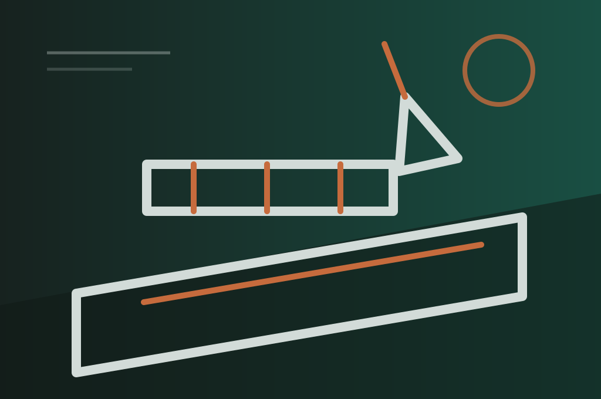

Soporte de fabricación adaptado a sus requisitos.
Nuestros proveedores combinan corte láser, plegado de precisión, soldadura, mecanizado y acabado superficial para piezas y conjuntos.
Cada consulta empieza con una revisión técnica. Analizamos material, tolerancias, geometría, volumen anual, requisitos de inspección y plazos antes de elegir la vía de fabricación adecuada.
Seguimos siendo su único punto de contacto durante la coordinación de proveedores, muestras, producción, control de calidad y entrega. Este proceso reduce el riesgo de compra y da visibilidad en cada hito.
Solicitar presupuesto →